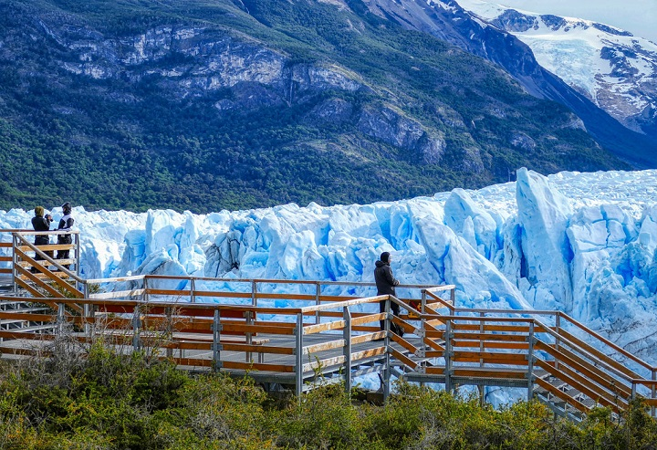
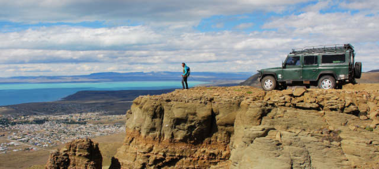

Glaciar Perito Moreno
El trayecto se inicia bordeando el Lago Argentino observando gran cantidad de liebres europeas, maras, caranchos y águilas moras, para luego ingresar en un bosque de lengas, ñires y coíhues sobre el Brazo Rico de 150 km2., hasta llegar al mirador del glaciar. Desde aquí y por medio de pasarelas en diferentes niveles se obtienen excelentes vistas de la masa de hielo de 190 km2. El silencio reinante se quiebra únicamente por los desprendimientos del frente glaciario de 60 m. de altura. Es el único glaciar que produce una ruptura de su frente cada cierta cantidad de años, con la posibilidad de observar el sobrevuelo de la única ave que atraviesa el glaciar, el cóndor.
Caminata sobre el Glaciar - Minitrekking
Traslado hasta el Puerto Bajo de las Sombras donde se embarca para cruzar el lago Rico, llegando a la costa sudoeste después de aproximadamente 20 minutos de navegación con vista al Canal de los Témpanos y a la pared sur del Glaciar Perito Moreno. Luego de haber cruzado el Brazo Rico, y llegar hasta la cascada del río Moreno donde el guía hace una demostración del uso de piquetes y grampones, se inicia la caminata sobre el hielo, observando formaciones muy curiosas; en el final los espera un brindis muy especial. Las edades permitidas van de los 10 a los 65 años (calzado desde 33 y peso mínimo de 28 Kg.). NO es recomendable para personas con dificultades de movimiento o niños de muy corta edad.
Balcones de Calafate
Saliendo desde El Calafate, ascenderemos 850 mts sobre el nivel del mar (SNM) por la cara norte del cordón Huyliche, llegaremos hasta el primer Balcón, donde los pasajeros disfrutarán de una vista panorámica del pueblo, la parte este del Lago Argentino y podrán contemplar el vuelo de los cóndores. Continúa el ascenso hasta el laberinto de Piedras, formación de 85 millones de años. Desde allí se inicia el descenso y llegaremos a la piedra de los Sombreros donde tomarán un refrigerio. Retornaremos hacia El Calafate descendiendo por la cara norte del cordón sin perder de vista el imponente Lago Argentino. Antes de llegar al pueblo haremos un stop para mostrarles el trayecto recorrido. Excursion de medio dia
Glaciar Sur Aventura

Un verdadero tour de trekking en lugares recónditos del Parque Nacional Los Glaciares. Transitamos la ruta, navegamos en dos embarcaciones diferentes, caminamos por bosques patagónicos y valles glaciarios, para llegar al final del recorrido frente a un increíble lago cubierto de témpanos, con vista a los glaciares Dickson, Cubo y Grande.